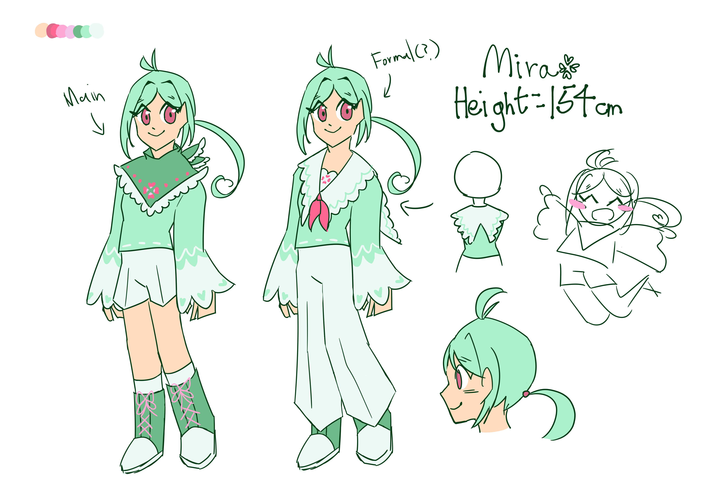

???

"The late leader of The Sky Pioneers whose life got cut short. During her life, she wished to stop the suffering and mortality of humanity, and bring back the early days of Stardust Isle. Despite being at a young age, she explored every corner of the world, and rediscovered important historical events and magic knowledge. She may have left the world, the hope that Stardust Isle florishes again remains still."
Facts about her:
- Mira is short for Miracle, but she prefers to be called this way
- Lavender and Mira used to be very close friends
- She's actually not an indoors person, and often sneak out and play
- Mira made a lot of inventions, like rocket shoes
- Rumor has it that Mira once broke out through a window using those shoes
- She was actually unlucky, constantly getting injured in some way
- But she believed that she could absorb others' misfortune, so that they can be luckier
- Mira's concept came to me in a dream, just like Lavender, however, she's rarely drawn since I couldn't come up with a good design for her
- She's supposed to be taller, but I did not compare her height to other refs, so now she has shrunken
- Her motifs are luck and clovers